带着双胞胎去旅行|张家界国家森林公园（三）
背景：圆圆&圈圈 2岁7个月
地点：张家界国家森林公园
任务：圆圆&圈圈，圆圈爸，圆圈妈
旅行方式：自驾游+穷游
我们今天的路线：
乘旅游中巴到森林公园大氧吧广场--乘环保车到黄石寨索道下站—乘坐黄石寨索道缆车到黄石寨—乘坐黄石寨索道缆车到黄石寨索道下站—步行回到森林公园大氧吧广场
01
其实我们的原计划是暴走金鞭溪。
路线都规划好了：森林公园氧吧广场—金鞭溪-十里画廊-武陵源标志门门票站，
然而，天意弄人。
我们在去往森林公园门票站的路上搭讪了从珠海过来的一家四口，他们正打算去黄石寨,张家界有句话,不上黄石寨,枉到张家界。
就冲这点，我们决定改变行程去黄石寨。
进入行程的第二天，武陵源区下起了淅淅沥沥的小雨，我们走出客栈，看到有一大妈在兜售雨衣虽然价格不美丽，质量很差，没办法，谁让圆圈妈这么佛系，雨具都没有带，只好忍痛买了四套雨衣。
吐槽下，淡季去张家界的不好之处，虽然人少，不用人挤人，但是很多店铺都关门停业了。
我们找早餐吃，走了好几条巷子，才在角落里找到一家港式甜品屋，自助餐式。成人15元，小孩子10元！
可选种类不多，鸡蛋玉米棒包子豆浆和面条，好在味道还不错哦！
02
从布谷客栈步行约25分钟，到达张家界武陵源汽车站，有旅游中巴可直达张家界森林公园门票站。
温馨提示：到了武陵源汽车站，不用去售票窗口买票，直接去对应的候车厅等车即可，或者跟车站工作人员说到景区的，会有人指引的。
旅游车不允许超载，满座就走，开到半路会有一大妈上来收费，车票10元一个，小孩子免费。
因为是春运，交警查的严，圆圈才2岁多就要求有独立座位，车开出去又被交警截停，经工作人员沟通，僵持了10几分钟才放行。
旅游中巴终点是张家界公园门票广场，那里有一处小商圈，有日常用品还有一些特产，边上还有停车场，收费不明。
我们在张家界国家森林公园石碑处看到很多小猴子，很多游客拿着食物在逗引猴子。
这些小猴子已经被我们人类宠坏了，一点都不怕生。看见我们手上拿着袋子就会龇牙咧嘴地跑过来讨吃的！
这是我们第一次静距离接触到猴子。圆圈有点怕，躲在我们身后，露出半边脸偷偷地看着。
边上有一批批导游一直在重复喊“请大家不要逗引猴子，容易被抓伤！”“请大家拉好背包的拉链，谨防猴子偷袭！”
我并没有在意，这些可爱精灵的猴子应该没有攻击性吧，事实上我真的是大错特错了！后面遇到的遭遇让我到现在对猴子都有阴影！
插播一则小遭遇：
我们在石碑处遇到一野导游过来搭讪，号称可以优惠坐索道上山，如果全程陪同+讲解，只需要200元。
我们并不需要导游，礼貌拒绝了，可是那位大叔居然一直缠着我们到黄石寨索道下站，害我们差点要报警了，后来那大叔找到下一个猎物才停止骚扰我们。
当遇到很多这样的野导游（就是当地人）如果不需要就严词拒绝或者不理会，像圆圈爸那样的小斯文，不欺负他才怪！
03
黄石寨索道是收费项目，下了环保车就看到有独立的售票点可以买到票，单程65元。
这是第二次坐缆车，如果幸运或者愿意等待，还可以坐上全景模式的透明缆车厢，就是脚底下也是透明全玻璃的那种！
哇塞，那个真的好刺激啊！可惜我是在无意中看别人的旅游攻略之后才发现的！不然一定誓死等到底！
刚坐上缆车，才发现外面正飘着小雪花，坐在缆车上看外面的飘雪，感觉好梦幻啊！
中午12点多，我们从黄石寨索道上站走出来，一股冷空气扑面而来，才发现今天圆圈好像穿少了。
但很快被眼前的雪景震撼住，忘记了寒冷，忘记了呼吸，与昨天青葱翠绿的袁家界比起来，这个银装素裹的黄石寨更让人觉得性感冷艳啊！
远处的山顶布满了玲珑剔透的雾凇、冰花，游道也铺了一层薄薄的积雪，踩在上面咯吱作响，整座大山瞬间变成了一个梦幻童话世界。
这对于广东长大的圆圈妈来说，实在是太刺激了。
我们拉着圆圈开心地在空地上踩积雪，打雪仗，都忘记还有更美的风景还在后头呢！
我们从雾海金龟开始走，经过仙女献花，飞云洞，天桥遗墩，月亮湾，方柱状石峰，
黄石寨景区观景台（玻璃），前花园，情人峰，双门迎宾，最后回到黄石寨索道上站。
04
我想说这是我和圆圈爸最糟心的一次出游。
跟刚开始打雪仗的激动兴奋形成鲜明对比的是，我们走到月亮湾的时候，圆圈体力不支，纷纷睡着了。
更糟糕的是，天空居然放晴了，积雪融化了，感觉更加冷了。我们只好静静抱住圆圈，试图让睡着的他们更暖和点。
路过的大妈都心疼我们：“怎么不给孩子穿厚点啊，连手套帽子都不带。”
我惭愧极了，都怪我为了让圆圈打扮得酷酷点，全然不顾圆圈爸的善意提醒，坚持给他们穿不保暖的小西装。
尤其是现在睡着了，更加要保暖了，看着圆圈嘴唇都冻苍白了。
祸不单行，我们在玻璃观景台被一只母猴子袭击了。
起初是一群游客事先在逗引猴子，我们太大意了只顾着拍照，等游客都走了，只剩下我和圆圈爸，抱着睡着的圆圈在那里看风景。
可能是猴子们被刚才的游客激怒了，也或者是看到圆圈爸的背包拉链没有拉好。一只母猴突然从树上窜下来，扑到圆圈爸的后背，抓走了背包里的饼干。
我们都被突如其来的袭击吓住了，赶紧往人多的地方跑。好在只是被抢走了半包饼干，圆圈也是睡着状态，不至于被吓到。
我依然惊魂未定，围栏外面是万丈深渊啊，要是遇到猴子群攻击，岂不是被逼跳崖！
我终于明白石碑处那些导游一直重复的提示语了。看来真不应该小看猴子，更不应该逗引猴子！
因为被猴子打扰了心情，再加上圆圈一直在睡，我们担心再次被猴子袭击，片刻不敢逗留，不敢坐下来休息，一路跟着其他游客结伴而行。
黄石寨的美，已经无暇顾及了！一心只想回到索道站躲起来取暖。
同行的游客纷纷投来同情的目光“哎呦，真遭罪，还这么小就带上山玩，图啥呀！”
听到这些负能量的话，我更加沮丧了。黄石寨于我而言，简直就是个误会。
圆圈兄弟此次上黄石寨实在亏大了，啥都没看到，从月亮湾一直睡直到黄石寨道站才醒来。
可怜我和圆圈爸全程丝毫不敢放松，只能一直抱着。这就是擅自更改计划的代价！
05
回到黄石寨索道上站，已经是下午的三点钟了，我和圆圈爸发生争执，纠结要不要坐索道下山然后去金鞭溪。
圆圈爸认为时间太赶了，怕是晚上7点钟还未必能走出金鞭溪，而我依然逞能希望抓紧时间多看几处景点。
最后看圆圈状态确实不好，饥饿寒冷。原来我们为了赶路，居然又没有好好吃一顿午饭。
思及此，只好提前结束今天的行程，早点下山去逛下传说中的溪布街。
准备下山前，圆圈爸看我依然依依不舍的样子，提出自己带着圆圈在索道站等候，让我再去附近的景点回味下。
我屁颠屁颠地跑了，抛下我的老公，我的两儿子，优美地跑了。
但只是在附近的观景台，登上九重仙阁，爬上六奇阁，再到摘星台。
“不上黄石寨，枉到张家界”果然不是玩虚的！而是实实在在的。
与袁家界相比，各有千秋，不相上下！
站在六奇阁上，领略那“山奇、水奇、石奇、云奇、植物奇与动物奇”的既具体而又飘渺的黄石寨的神韵。
可惜了，没有三个男人在身边一起欣赏这鬼斧神工的自然风光。
与圆圈爸回合后，乘坐索道到了黄石寨索道下站，看着天色还早，我们并没有坐环保车到大氧吧广场。
而是徒步到氧吧广场。还好不是很远，走了约20分钟。
期间圆圈的状态很好，一路跑跑跳跳，追追打打，很快就走到大氧吧广场（不得不说，双胞胎的好处就是羡慕不来的玩伴总在你身边）
我们在旅游大巴候车点坐上回武陵源门票站的车，途径溪布街的时候，就下车了。车程约40分钟左右。
溪布街真热闹啊！都是出来置办年货的当地人，像我们这样都腊月27了还跑出来旅游还真是奇葩了。
06
今天的行程总结
任何时候出行，都要考虑天气，尤其是带着孩子，多带多备点总好过需要用时才发现没带，后悔也来不及了！
我贪图省事，害的圆圈受寒着凉，人家是坑爹，我这是坑儿子啊！
随意改变行程，实在是此次出行的巨大败笔。因此，规划好的行程除非不得已的原因，尽量不要改变。
毕竟规划好的行程自己心里有底，随意切换的路线没有了解过总会手忙脚乱。
出行过程，总会遇到或多或少的小意外，我们大人要注意调整情绪，而我每次遇到事情都会找圆圈爸发泄，责怪他不能未卜先知，反正就是圆圈爸的错。
带着孩子出行，最考验夫妻感情了。且行且珍惜啊！
不要逗引猴子，猴子是灵长类动物，几万年前，我们是同类，不会比人类笨。
多关注旅行注意事项，若不熟悉路线，可以跟着其他旅游团走，多听听导游的温馨提示。
未
完
待
续
带着双胞胎去旅行|张家界国家森林公园（一）
带着双胞胎去旅行|张家界国家森林公园（二）
带着双胞胎去旅行|张家界国家森林公园（三）
带着双胞胎去旅行|张家界国家森林公园（四）
本文转载自孖仔帮，专注双胞胎育儿经验分享，著作权归孖仔帮所有。
阅读原文
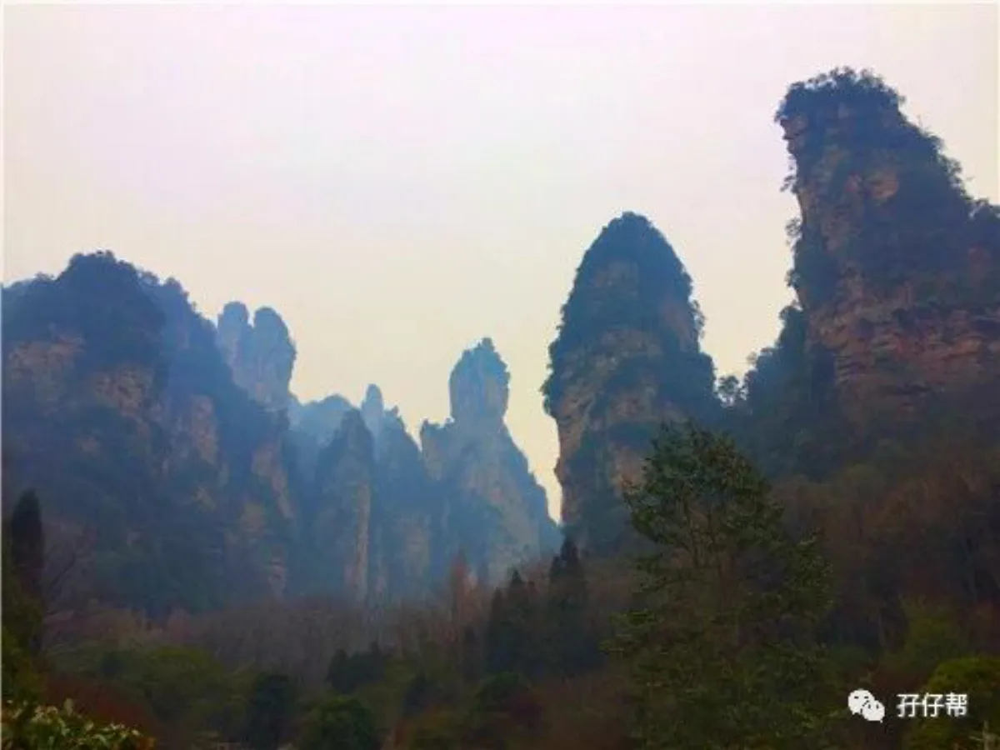
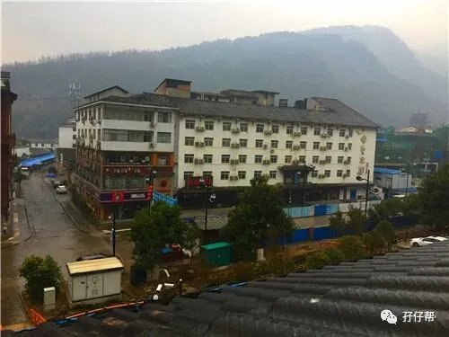
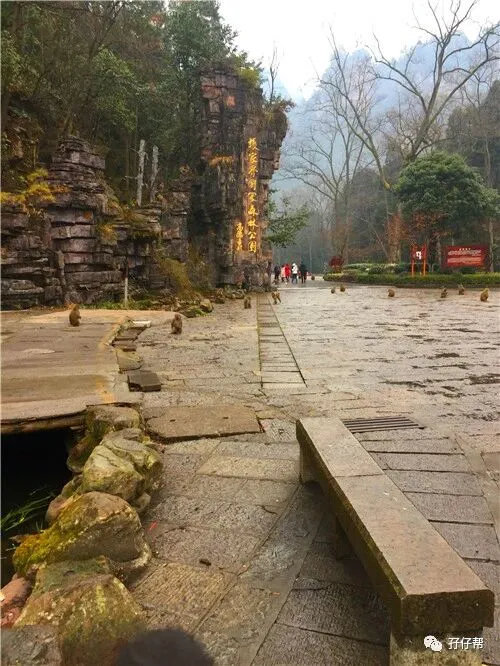
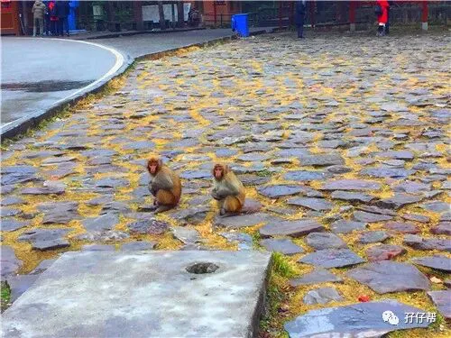
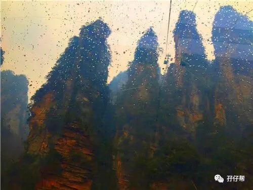
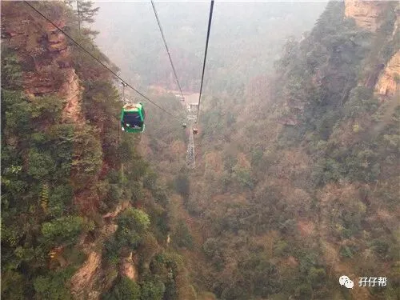
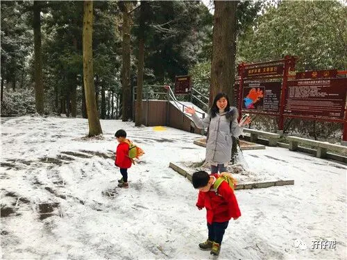
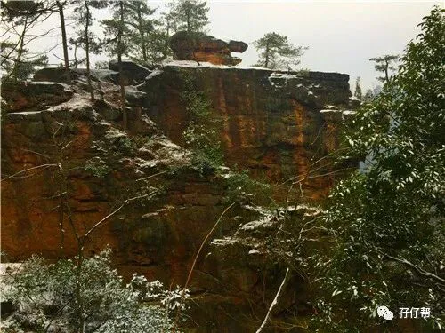
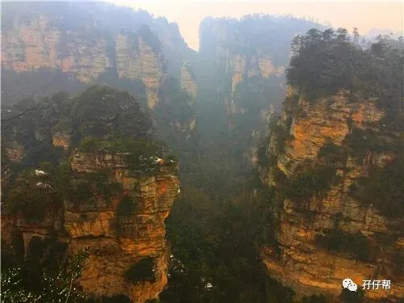
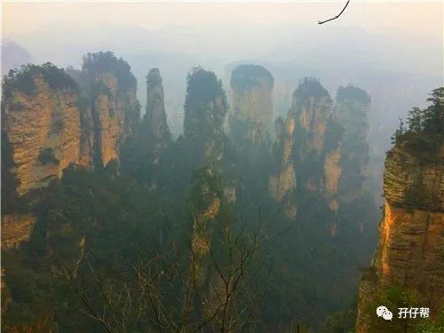
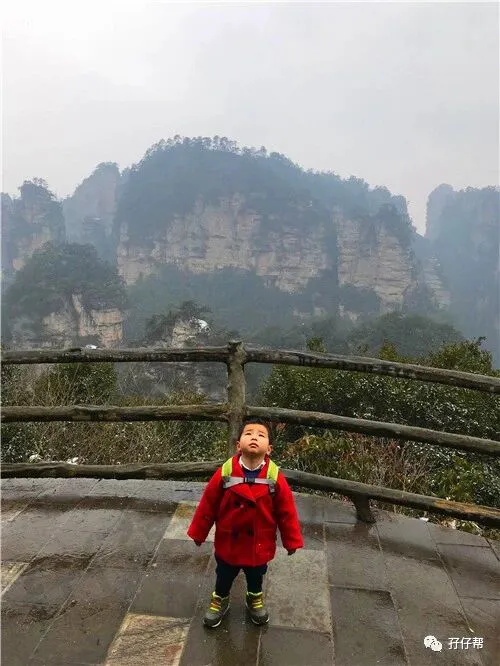